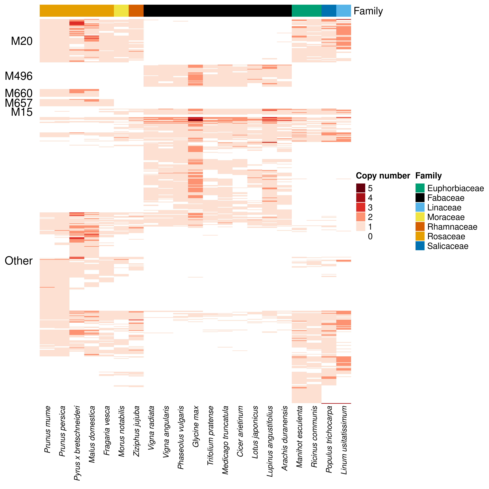

library(here)
library(GraphExperiment)
library(syntenet)
library(tidyverse)
library(ggraph)
library(ComplexHeatmap)
library(ape)
set.seed(123) # for reproducibility6 Use case 6: comparative genomics with species and phylogenetic profile graphs
In comparative genomics, data are often represented as matrices with features (e.g., gene families, orthogroups, synteny clusters) in rows and species in columns. Here, we will use GraphExperiment to store a matrix of phylogenomic profiles (i.e., copy number of synteny clusters across species) along with two graphs: a species-species graph derived from a phylogeny (in colGraphs), and a graph of synteny clusters with similar phylogenetic profiles (in rowGraphs). We will use data from the syntenet package (Almeida-Silva et al. 2022), which include synteny network clusters for 25 eudicot species from Zhao and Schranz (2019), and a microsynteny-based angiosperm phylogeny (Zhao et al. 2021).
We will also demonstrate how phylogenies (phylo objects) can be represented as igraph objects, since phylogenies are a special kind of graph (i.e., a directed acyclic graph, DAG).
6.1 Data description
The data set clusters is a data frame with genes and the synteny clusters they belong to, and the species tree angiosperm_phylogeny is a phylo object with 123 angiosperm species. We will first create a phylogenomic profiles matrix with the copy number of each synteny cluster across species.
# Load data
data(clusters)
data(angiosperm_phylogeny)
head(clusters) Gene Cluster
1 cca_23646 25
2 cca_23668 1089
3 cca_32926 304
4 cca_26186 254
5 cca_24381 592
6 cca_24396 20angiosperm_phylogeny
Phylogenetic tree with 123 tips and 121 internal nodes.
Tip labels:
Prunus mume, Prunus persica, Pyrus x bretschneideri, Malus domestica, Rosa chinensis, Fragaria vesca, ...
Node labels:
, 100/100, 100/100, 100/100, 100/100, 100/100, ...
Unrooted; includes branch length(s).# Get phylogenomic profiles
profiles <- phylogenomic_profile(clusters)
profiles <- matrix(profiles, nrow = nrow(profiles), dimnames = dimnames(profiles))
rownames(profiles) <- paste0("SC", rownames(profiles))
profiles[1:5, 1:5]
adu car cca fve gma
SC1 0 1 2 2 3
SC2 2 2 2 1 3
SC3 1 1 1 1 2
SC4 1 2 1 1 4
SC5 1 1 1 1 1Species in the profiles matrix are represented by abbreviations, while species in the tree are represented by their full names. Thus, we will create a data frame with species metadata (full names and families), and keep only species that are present in both data sets.
# Create species metadata
species_md <- tribble(
~abbrev, ~species, ~family,
"adu", "Arachis duranensis", "Fabaceae",
"car", "Cicer arietinum", "Fabaceae",
"cca", "Cercis canadensis", "Fabaceae",
"fve", "Fragaria vesca", "Rosaceae",
"gma", "Glycine max", "Fabaceae",
"hlu", "Humulus lupulus", "Cannabaceae",
"jcu", "Jatropha curcas", "Euphorbiaceae",
"Lang", "Lupinus angustifolius", "Fabaceae",
"lja", "Lotus japonicus", "Fabaceae",
"lus", "Linum usitatissimum", "Linaceae",
"mdo", "Malus domestica", "Rosaceae",
"mes", "Manihot esculenta", "Euphorbiaceae",
"Mnot", "Morus notabilis", "Moraceae",
"mtr", "Medicago truncatula", "Fabaceae",
"pbr", "Pyrus x bretschneideri", "Rosaceae",
"pmu", "Prunus mume", "Rosaceae",
"ppe", "Prunus persica", "Rosaceae",
"ptr", "Populus trichocarpa", "Salicaceae",
"pvu", "Phaseolus vulgaris", "Fabaceae",
"rco", "Ricinus communis", "Euphorbiaceae",
"tpr", "Trifolium pratense", "Fabaceae",
"van", "Vigna angularis", "Fabaceae",
"vra", "Vigna radiata", "Fabaceae",
"Zjuj", "Ziziphus jujuba", "Rhamnaceae"
) |>
filter(species %in% angiosperm_phylogeny$tip.label) |>
column_to_rownames("species")
nrow(species_md)[1] 21# Keep only species in both data sets and rename columns to full names
profiles <- profiles[, species_md$abbrev]
colnames(profiles) <- rownames(species_md)
# Remove synteny clusters that are absent from all remaining species
profiles <- profiles[rowSums(profiles) > 0, ]
# Quick look at the final profile matrix
dim(profiles)[1] 2535 21profiles[1:5, 1:5]
Arachis duranensis Cicer arietinum Fragaria vesca Glycine max
SC1 0 1 2 3
SC2 2 2 1 3
SC3 1 1 1 2
SC4 1 2 1 4
SC5 1 1 1 1
Lupinus angustifolius
SC1 2
SC2 3
SC3 1
SC4 2
SC5 26.2 Phylogenies as graphs
A phylogeny is a DAG in which edges point from ancestors to descendants. Thus, phylo objects can beconverted to igraph objects with the as.igraph() method from ape (Paradis and Schliep 2018). Here, we will first subset the tree to keep only our species of interest, and then convert it to a DAG with branch lengths as edge attributes.
# Subset tree and remove node labels (bootstrap support values)
tree <- ape::keep.tip(angiosperm_phylogeny, colnames(profiles))
tree$node.label <- NULL
# Convert `phylo` to `igraph`, adding branch lengths as edge attributes
dag <- ape::as.igraph.phylo(tree, directed = TRUE)
E(dag)$length <- tree$edge.length
V(dag)$is_tip <- V(dag)$name %in% tree$tip.label
dagIGRAPH a2ae46c DN-- 41 40 --
+ attr: name (v/c), is_tip (v/l), length (e/n)
+ edges from a2ae46c (vertex names):
[1] Node1 ->Node2 Node2 ->Node3
[3] Node3 ->Node4 Node4 ->Node5
[5] Node5 ->Node6 Node6 ->Prunus mume
[7] Node6 ->Prunus persica Node5 ->Node7
[9] Node7 ->Pyrus x bretschneideri Node7 ->Malus domestica
[11] Node4 ->Fragaria vesca Node3 ->Node8
[13] Node8 ->Morus notabilis Node8 ->Ziziphus jujuba
[15] Node2 ->Node9 Node9 ->Node10
+ ... omitted several edgesis_dag(dag)[1] TRUESince the tree is now an igraph object, any graph algorithm can be used on it. For instance, we can obtain the matrix of shared evolutionary history between pairs of species (i.e., the distance from the root to their most recent common ancestor), which is the variance-covariance matrix under a Brownian motion model used by most phylogenetic comparative methods. For tips \(i\) and \(j\), the shared path length is \((d_{root,i} + d_{root,j} - d_{i,j}) / 2\), where \(d\) is the distance between nodes along branches.
# Get distances between all pairs of nodes
d <- distances(dag, mode = "all", weights = E(dag)$length)
root <- V(dag)[igraph::degree(dag, mode = "in") == 0]$name
tips <- V(dag)$name[V(dag)$is_tip]
# Get shared path lengths
shared <- outer(d[root, tips], d[root, tips], "+") / 2 - d[tips, tips] / 2
# Sanity check: same as the output of `ape::vcv()`
all.equal(shared, ape::vcv(tree)[tips, tips])[1] TRUENodes of graphs in colGraphs must match column names (here, species) exactly. Thus, DAGs representing phylogenies (which include internal nodes) cannot be stored in the colGraphs slot. Instead, we will store a species-species graph with edge weights representing shared evolutionary history (i.e., the off-diagonal elements of the matrix above), and a node attribute (root_distance) with the distances from the root to each species (i.e., the diagonal). Pairs of species whose most recent common ancestor is the root share no evolutionary history (weight of zero), so they are not connected.
Note
Native support for graphs containing nodes that are not observations (e.g., internal nodes of phylogenies and phylogenetic networks) is planned for future versions of GraphExperiment. For now, full DAGs can be stored in the metadata slot, as we will do below.
# Create species graph from the matrix of shared path lengths
phylo_graph <- graph_from_adjacency_matrix(
shared, mode = "undirected", weighted = TRUE, diag = FALSE
)
V(phylo_graph)$root_distance <- diag(shared)[V(phylo_graph)$name]
phylo_graphIGRAPH bf02b92 UNW- 21 174 --
+ attr: name (v/c), root_distance (v/n), weight (e/n)
+ edges from bf02b92 (vertex names):
[1] Prunus mume--Prunus persica Prunus mume--Pyrus x bretschneideri
[3] Prunus mume--Malus domestica Prunus mume--Fragaria vesca
[5] Prunus mume--Morus notabilis Prunus mume--Ziziphus jujuba
[7] Prunus mume--Vigna radiata Prunus mume--Vigna angularis
[9] Prunus mume--Phaseolus vulgaris Prunus mume--Glycine max
[11] Prunus mume--Trifolium pratense Prunus mume--Medicago truncatula
[13] Prunus mume--Cicer arietinum Prunus mume--Lotus japonicus
[15] Prunus mume--Lupinus angustifolius Prunus mume--Arachis duranensis
+ ... omitted several edges6.3 Phylogenetic profile similarity graph
Synteny clusters (or gene families) with similar patterns of presence and absence across species (i.e., similar phylogenetic profiles) are likely functionally related, as genes in the same pathway or protein complex tend to be gained and lost together (Pellegrini et al. 1999). Here, we will create a graph of synteny clusters by connecting clusters with Jaccard similarities \(\geq\) 0.9 between their presence/absence profiles. Since clusters present in (nearly) all species or in very few species provide little information, we will only consider clusters that are absent in at least three species and present in at least three species. All other clusters will be included in the graph as isolated nodes, since nodes in row graphs must match row names exactly.
# Get presence/absence profiles of informative clusters
pa <- (profiles > 0) * 1
n_species <- ncol(pa)
informative <- rowSums(pa) >= 3 & rowSums(pa) <= n_species - 3
sum(informative)[1] 1400# Get Jaccard similarities between informative clusters
jaccard <- 1 - as.matrix(dist(pa[informative, ], method = "binary"))
jaccard[jaccard < 0.9] <- 0
# Create graph, including all clusters as nodes
profile_graph <- graph_from_adjacency_matrix(
jaccard, mode = "undirected", weighted = TRUE, diag = FALSE
) |>
add_vertices(
sum(!informative), name = rownames(pa)[!informative]
)
profile_graphIGRAPH 93a9eab UNW- 2535 3044 --
+ attr: name (v/c), weight (e/n)
+ edges from 93a9eab (vertex names):
[1] SC10 --SC84 SC11 --SC232 SC11 --SC382 SC11 --SC464 SC19 --SC1172
[6] SC24 --SC26 SC24 --SC329 SC24 --SC497 SC24 --SC787 SC24 --SC1060
[11] SC24 --SC1281 SC26 --SC329 SC26 --SC497 SC26 --SC567 SC26 --SC787
[16] SC26 --SC813 SC26 --SC1001 SC26 --SC1060 SC57 --SC120 SC57 --SC658
[21] SC57 --SC683 SC61 --SC260 SC61 --SC342 SC61 --SC363 SC61 --SC465
[26] SC61 --SC1263 SC67 --SC235 SC85 --SC654 SC94 --SC496 SC95 --SC1230
[31] SC105--SC474 SC105--SC899 SC118--SC155 SC118--SC463 SC118--SC766
[36] SC118--SC972 SC120--SC658 SC120--SC683 SC121--SC180 SC121--SC268
+ ... omitted several edgesWe will then identify modules (or communities) of synteny clusters with similar profiles using the Louvain algorithm.
# Identify modules of clusters with similar profiles (Louvain algorithm)
modules <- as.character(membership(cluster_louvain(profile_graph)))
modules[igraph::degree(profile_graph) == 0] <- NA # isolated nodes are not in modules
V(profile_graph)$module <- modules
profile_graphIGRAPH 93a9eab UNW- 2535 3044 --
+ attr: name (v/c), module (v/c), weight (e/n)
+ edges from 93a9eab (vertex names):
[1] SC10 --SC84 SC11 --SC232 SC11 --SC382 SC11 --SC464 SC19 --SC1172
[6] SC24 --SC26 SC24 --SC329 SC24 --SC497 SC24 --SC787 SC24 --SC1060
[11] SC24 --SC1281 SC26 --SC329 SC26 --SC497 SC26 --SC567 SC26 --SC787
[16] SC26 --SC813 SC26 --SC1001 SC26 --SC1060 SC57 --SC120 SC57 --SC658
[21] SC57 --SC683 SC61 --SC260 SC61 --SC342 SC61 --SC363 SC61 --SC465
[26] SC61 --SC1263 SC67 --SC235 SC85 --SC654 SC94 --SC496 SC95 --SC1230
[31] SC105--SC474 SC105--SC899 SC118--SC155 SC118--SC463 SC118--SC766
[36] SC118--SC972 SC120--SC658 SC120--SC683 SC121--SC180 SC121--SC268
+ ... omitted several edges6.4 Storing all data in a GraphExperiment object
Now, we can store the phylogenomic profiles, the species metadata, and both graphs in a GraphExperiment object. The full DAG of the phylogeny will be stored in the metadata slot.
ge <- GraphExperiment(
assays = list(counts = profiles),
colData = species_md[colnames(profiles), ],
rowGraphs = list(profile_sim = profile_graph),
colGraphs = list(phylo = phylo_graph),
metadata = list(phylo_dag = dag)
)
geclass: GraphExperiment
dim: 2535 21
metadata(1): phylo_dag
assays(1): counts
rownames(2535): SC1 SC2 ... SC5596 SC5597
rowData names(1): profile_sim__module
colnames(21): Arachis duranensis Cicer arietinum ... Vigna radiata
Ziziphus jujuba
colData names(3): abbrev family phylo__root_distance
reducedDimNames(0):
mainExpName: NULL
altExpNames(0):
rowGraphs(1): profile_sim
colGraphs(1): phyloAs expected, node attributes from rowGraphs and colGraphs were added to rowData and colData, respectively.
head(rowData(ge))DataFrame with 6 rows and 1 column
profile_sim__module
<character>
SC1 NA
SC2 NA
SC3 NA
SC4 NA
SC5 NA
SC6 NAhead(colData(ge))DataFrame with 6 rows and 3 columns
abbrev family phylo__root_distance
<character> <character> <numeric>
Arachis duranensis adu Fabaceae 0.0495666
Cicer arietinum car Fabaceae 0.0638300
Fragaria vesca fve Rosaceae 0.0437938
Glycine max gma Fabaceae 0.0433086
Lupinus angustifolius Lang Fabaceae 0.0474296
Lotus japonicus lja Fabaceae 0.06123776.5 Phylogenetic signal of synteny clusters
Finally, we will use the species graph in colGraphs to quantify the phylogenetic signal in the copy number of each synteny cluster, i.e., to what extent closely related species have similar copy numbers. For that, we will calculate Moran’s I (Gittleman and Kot 1990), using as weights the shared evolutionary history between species, which we can extract directly from the graph as a weighted adjacency matrix.
# Get weight matrix from the species graph
W <- as_adjacency_matrix(colGraph(ge, "phylo"), attr = "weight", sparse = FALSE)
W <- W[colnames(ge), colnames(ge)]
# Calculate Moran's I for each cluster with variable copy number
counts <- assay(ge, "counts")
variable <- apply(counts, 1, var) > 0
moran <- apply(counts[variable, ], 1, function(copies) {
res <- ape::Moran.I(copies, W)
c(I = res$observed, P = res$p.value)
})
moran <- as.data.frame(t(moran))
moran$padj <- p.adjust(moran$P, method = "BH")
# Add results to `rowData`
rowData(ge)$moran_I <- moran[rownames(ge), "I"]
rowData(ge)$moran_padj <- moran[rownames(ge), "padj"]
head(rowData(ge))DataFrame with 6 rows and 5 columns
profile_sim__module moran_I profile_sim__module moran_padj
<character> <numeric> <character> <numeric>
SC1 NA 0.15168836 NA 0.18228154
SC2 NA 0.28143940 NA 0.00998879
SC3 NA -0.02704232 NA 0.93999366
SC4 NA 0.03905267 NA 0.59245157
SC5 NA 0.00854976 NA 0.76677411
SC6 NA -0.05368877 NA 0.98663195
profile_sim__module
<character>
SC1 NA
SC2 NA
SC3 NA
SC4 NA
SC5 NA
SC6 NA# Number of clusters with significant phylogenetic signal
sum(rowData(ge)$moran_padj < 0.05, na.rm = TRUE)[1] 629Synteny clusters with phylogenetic signal include, for instance, clusters that are specific to (or lost in) particular lineages. Since the results of the Moran’s I test and the module assignments in the phylogenetic profile graph are both in rowData, we can easily check which modules contain more clusters with significant phylogenetic signal.
# Modules with the largest number of clusters with phylogenetic signal
rowData(ge) |>
as.data.frame() |>
filter(moran_padj < 0.05, !is.na(profile_sim__module)) |>
count(profile_sim__module, sort = TRUE) |>
head() profile_sim__module n
1 20 73
2 496 37
3 660 13
4 657 12
5 15 10
6 612 10Let’s visualize the copy number of synteny clusters with significant phylogenetic signal, with species ordered as in the phylogeny and clusters grouped by module in the phylogenetic profile graph.
# Subset object to keep only clusters with phylogenetic signal
ge_signal <- ge[which(rowData(ge)$moran_padj < 0.05), ]
# Get species order from the phylogeny (stored in `metadata`)
species_order <- intersect(
names(dfs(metadata(ge)$phylo_dag, root, mode = "out")$order),
colnames(ge_signal)
)
# Keep only the 5 largest modules for visualization
top_modules <- names(sort(table(rowData(ge_signal)$profile_sim__module), decreasing = TRUE))[1:5]
mod <- rowData(ge_signal)$profile_sim__module
mod[!mod %in% top_modules] <- "Other"
mod[mod != "Other"] <- paste0("M", mod[mod != "Other"])
# Plot heatmap
family_colors <- setNames(
palette.colors(length(unique(ge$family)), "Okabe-Ito"),
unique(ge$family)
)
Heatmap(
pmin(assay(ge_signal, "counts")[, species_order], 5),
name = "Copy number",
col = c("white", "#fee0d2", "#fc9272", "#de2d26", "#a50f15", "#67000d"),
cluster_columns = FALSE,
row_split = factor(mod, levels = c(paste0("M", top_modules), "Other")),
show_row_names = FALSE, show_row_dend = FALSE, cluster_row_slices = FALSE,
row_title_rot = 0,
top_annotation = HeatmapAnnotation(
Family = ge$family[match(species_order, colnames(ge))],
col = list(Family = family_colors)
),
column_names_gp = gpar(fontsize = 9, fontface = "italic")
)
The heatmap shows that modules in the phylogenetic profile graph group synteny clusters with lineage-specific patterns of presence/absence (e.g., clusters that are specific to or lost in Fabaceae or Rosaceae). With all data in a single object, comparative genomics analyses that combine feature-level graphs (e.g., co-occurring gene families) and species-level graphs (e.g., phylogenies) become straightforward.
Session info
This document was created under the following conditions:
─ Session info ───────────────────────────────────────────────────────────────
setting value
version R version 4.5.2 (2025-10-31)
os Ubuntu 22.04.5 LTS
system x86_64, linux-gnu
ui X11
language (EN)
collate en_US.UTF-8
ctype en_US.UTF-8
tz Europe/Brussels
date 2026-10-24
pandoc 3.6.3 @ /opt/quarto/bin/tools/ (via rmarkdown)
quarto 1.8.25 @ /usr/local/bin/quarto
─ Packages ───────────────────────────────────────────────────────────────────
package * version date (UTC) lib source
abind 1.4-8 2024-09-12 [1] CRAN (R 4.5.2)
ape * 5.8-1 2024-12-16 [1] CRAN (R 4.5.2)
Biobase * 2.70.0 2025-10-29 [1] Bioconductor 3.22 (R 4.5.2)
BiocBaseUtils 1.12.0 2025-10-29 [1] Bioconductor 3.22 (R 4.5.2)
BiocGenerics * 0.56.0 2025-10-29 [1] Bioconductor 3.22 (R 4.5.2)
BiocParallel 1.44.0 2025-10-29 [1] Bioconductor 3.22 (R 4.5.2)
Biostrings 2.78.0 2025-10-29 [1] Bioconductor 3.22 (R 4.5.2)
cachem 1.1.0 2024-05-16 [1] CRAN (R 4.5.2)
Cairo 1.7-0 2025-10-29 [1] CRAN (R 4.5.2)
circlize 0.4.17 2025-12-08 [1] CRAN (R 4.5.2)
cli 3.6.5 2025-04-23 [1] CRAN (R 4.5.2)
clue 0.3-67 2026-02-18 [1] CRAN (R 4.5.2)
cluster 2.1.8.1 2025-03-12 [4] CRAN (R 4.4.3)
coda 0.19-4.1 2024-01-31 [1] CRAN (R 4.5.2)
codetools 0.2-19 2023-02-01 [4] CRAN (R 4.2.2)
colorspace 2.1-2 2025-09-22 [1] CRAN (R 4.5.2)
ComplexHeatmap * 2.26.1 2026-02-03 [1] Bioconductor 3.22 (R 4.5.2)
crayon 1.5.3 2024-06-20 [1] CRAN (R 4.5.2)
DelayedArray 0.36.0 2025-10-29 [1] Bioconductor 3.22 (R 4.5.2)
dichromat 2.0-1 2026-07-22 [1] CRAN (R 4.5.2)
digest 0.6.39 2025-11-19 [1] CRAN (R 4.5.2)
doParallel 1.0.17 2022-02-07 [1] CRAN (R 4.5.2)
dplyr * 1.1.4 2023-11-17 [1] CRAN (R 4.5.2)
evaluate 1.0.5 2025-08-27 [1] CRAN (R 4.5.2)
farver 2.1.2 2024-05-13 [1] CRAN (R 4.5.2)
fastmap 1.2.0 2024-05-15 [1] CRAN (R 4.5.2)
forcats * 1.0.1 2025-09-25 [1] CRAN (R 4.5.2)
foreach 1.5.2 2022-02-02 [1] CRAN (R 4.5.2)
generics * 0.1.4 2025-05-09 [1] CRAN (R 4.5.2)
GenomicRanges * 1.62.1 2025-12-08 [1] Bioconductor 3.22 (R 4.5.2)
GetoptLong 1.1.0 2025-11-28 [1] CRAN (R 4.5.2)
ggforce 0.5.0 2025-06-18 [1] CRAN (R 4.5.2)
ggnetwork 0.5.14 2025-09-10 [1] CRAN (R 4.5.2)
ggplot2 * 4.0.1 2025-11-14 [1] CRAN (R 4.5.2)
ggraph * 2.2.2 2025-08-24 [1] CRAN (R 4.5.2)
ggrepel 0.9.6 2024-09-07 [1] CRAN (R 4.5.2)
GlobalOptions 0.1.3 2025-11-28 [1] CRAN (R 4.5.2)
glue 1.8.0 2024-09-30 [1] CRAN (R 4.5.2)
GraphExperiment * 1.1.2 2026-09-08 [1] Bioconductor
graphlayouts 1.2.3 2026-02-21 [1] CRAN (R 4.5.2)
gridExtra 2.3 2017-09-09 [1] CRAN (R 4.5.2)
gtable 0.3.6 2024-10-25 [1] CRAN (R 4.5.2)
here * 1.0.2 2025-09-15 [1] CRAN (R 4.5.2)
hms 1.1.4 2025-10-17 [1] CRAN (R 4.5.2)
htmltools 0.5.9 2025-12-04 [1] CRAN (R 4.5.2)
htmlwidgets 1.6.4 2023-12-06 [1] CRAN (R 4.5.2)
igraph * 2.2.1 2025-10-27 [1] CRAN (R 4.5.2)
intergraph 2.0-4 2024-02-01 [1] CRAN (R 4.5.2)
IRanges * 2.44.0 2025-10-29 [1] Bioconductor 3.22 (R 4.5.2)
iterators 1.0.14 2022-02-05 [1] CRAN (R 4.5.2)
jsonlite 2.0.0 2025-03-27 [1] CRAN (R 4.5.2)
knitr 1.51 2025-12-20 [1] CRAN (R 4.5.2)
lattice 0.22-5 2023-10-24 [4] CRAN (R 4.3.1)
lifecycle 1.0.5 2026-01-08 [1] CRAN (R 4.5.2)
lubridate * 1.9.4 2024-12-08 [1] CRAN (R 4.5.2)
magick 2.9.0 2025-09-08 [1] CRAN (R 4.5.2)
magrittr 2.0.4 2025-09-12 [1] CRAN (R 4.5.2)
MASS 7.3-65 2025-02-28 [4] CRAN (R 4.4.3)
Matrix 1.7-4 2025-08-28 [4] CRAN (R 4.5.1)
MatrixGenerics * 1.22.0 2025-10-29 [1] Bioconductor 3.22 (R 4.5.2)
matrixStats * 1.5.0 2025-01-07 [1] CRAN (R 4.5.2)
memoise 2.0.1 2021-11-26 [1] CRAN (R 4.5.2)
network 1.20.0 2026-02-07 [1] CRAN (R 4.5.2)
nlme 3.1-168 2025-03-31 [4] CRAN (R 4.4.3)
otel 0.2.0 2025-08-29 [1] CRAN (R 4.5.2)
pheatmap 1.0.13 2025-06-05 [1] CRAN (R 4.5.2)
pillar 1.11.1 2025-09-17 [1] CRAN (R 4.5.2)
pkgconfig 2.0.3 2019-09-22 [1] CRAN (R 4.5.2)
png 0.1-8 2022-11-29 [1] CRAN (R 4.5.2)
polyclip 1.10-7 2024-07-23 [1] CRAN (R 4.5.2)
purrr * 1.2.1 2026-01-09 [1] CRAN (R 4.5.2)
R6 2.6.1 2025-02-15 [1] CRAN (R 4.5.2)
RColorBrewer 1.1-3 2022-04-03 [1] CRAN (R 4.5.2)
Rcpp 1.1.1 2026-01-10 [1] CRAN (R 4.5.2)
readr * 2.1.6 2025-11-14 [1] CRAN (R 4.5.2)
rjson 0.2.23 2024-09-16 [1] CRAN (R 4.5.2)
rlang 1.1.7 2026-01-09 [1] CRAN (R 4.5.2)
rmarkdown 2.30 2025-09-28 [1] CRAN (R 4.5.2)
rprojroot 2.1.1 2025-08-26 [1] CRAN (R 4.5.2)
S4Arrays 1.10.1 2025-12-01 [1] Bioconductor 3.22 (R 4.5.2)
S4Vectors * 0.48.0 2025-10-29 [1] Bioconductor 3.22 (R 4.5.2)
S7 0.2.1 2025-11-14 [1] CRAN (R 4.5.2)
scales 1.4.0 2025-04-24 [1] CRAN (R 4.5.2)
Seqinfo * 1.0.0 2025-10-29 [1] Bioconductor 3.22 (R 4.5.2)
sessioninfo 1.2.3 2025-02-05 [1] CRAN (R 4.5.2)
shape 1.4.6.1 2024-02-23 [1] CRAN (R 4.5.2)
SingleCellExperiment * 1.32.0 2025-10-29 [1] Bioconductor 3.22 (R 4.5.2)
sna 2.8 2024-09-08 [1] CRAN (R 4.5.2)
SparseArray 1.10.8 2025-12-18 [1] Bioconductor 3.22 (R 4.5.2)
statnet.common 4.13.0 2025-12-16 [1] CRAN (R 4.5.2)
stringi 1.8.7 2025-03-27 [1] CRAN (R 4.5.2)
stringr * 1.6.0 2025-11-04 [1] CRAN (R 4.5.2)
SummarizedExperiment * 1.40.0 2025-10-29 [1] Bioconductor 3.22 (R 4.5.2)
syntenet * 1.12.0 2025-10-30 [1] Bioconductor 3.22 (R 4.5.2)
tibble * 3.3.1 2026-01-11 [1] CRAN (R 4.5.2)
tidygraph 1.3.1 2024-01-30 [1] CRAN (R 4.5.2)
tidyr * 1.3.2 2025-12-19 [1] CRAN (R 4.5.2)
tidyselect 1.2.1 2024-03-11 [1] CRAN (R 4.5.2)
tidyverse * 2.0.0 2023-02-22 [1] CRAN (R 4.5.2)
timechange 0.3.0 2024-01-18 [1] CRAN (R 4.5.2)
tweenr 2.0.3 2024-02-26 [1] CRAN (R 4.5.2)
tzdb 0.5.0 2025-03-15 [1] CRAN (R 4.5.2)
vctrs 0.7.1 2026-01-23 [1] CRAN (R 4.5.2)
viridis 0.6.5 2024-01-29 [1] CRAN (R 4.5.2)
viridisLite 0.4.2 2023-05-02 [1] CRAN (R 4.5.2)
withr 3.0.2 2024-10-28 [1] CRAN (R 4.5.2)
xfun 0.56 2026-01-18 [1] CRAN (R 4.5.2)
XVector 0.50.0 2025-10-29 [1] Bioconductor 3.22 (R 4.5.2)
yaml 2.3.12 2025-12-10 [1] CRAN (R 4.5.2)
[1] /home/faalm/R/x86_64-pc-linux-gnu-library/4.5
[2] /usr/local/lib/R/site-library
[3] /usr/lib/R/site-library
[4] /usr/lib/R/library
* ── Packages attached to the search path.
──────────────────────────────────────────────────────────────────────────────